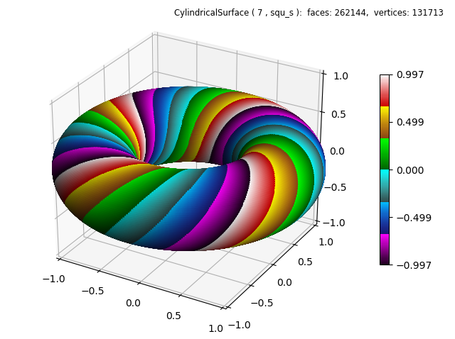
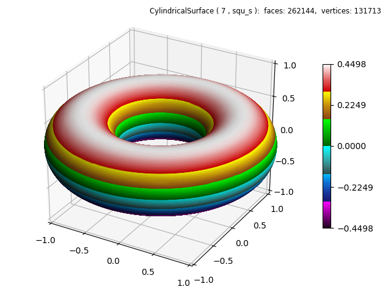

Order of Operation¶
A basetype of ‘squ_s’ was used for this case because the twisted surface is rejoined at θ equal to 0 and 2π. A custom color map, using the cmap_utilities, was used to emphasize the effect.
The color map was first applied to the cylinder. Then the twisting geometric mapping was made. The color map was applied first because the geometry has the same ‘shape’ both before and after the twist operation is applied.
import numpy as np
from matplotlib import pyplot as plt
from matplotlib.ticker import LinearLocator
import s3dlib.surface as s3d
import s3dlib.cmap_utilities as cmu
#.. Order of Operation
# 1. Define functions to examine ....................................
# .... custom color map......
cmu.hsv_cmap_gradient( [0,1,.8], [0,0,1], 'redG')
cmu.hsv_cmap_gradient( 'saddlebrown', 'yellow', 'yelG')
cmu.hsv_cmap_gradient( 'darkgreen', 'lime', 'grnG')
cmu.hsv_cmap_gradient( 'darkslategray', 'cyan', 'cynG')
cmu.hsv_cmap_gradient( 'midnightblue', 'deepskyblue', 'bluG')
cmu.hsv_cmap_gradient( [0.833,1,0.1], 'magenta', 'mgnG')
cmap=cmu.stitch_cmap( 'mgnG','bluG','cynG', 'grnG','yelG', 'redG', name='stchG' )
def twisted_torus(rtz,twists) :
r,t,z = rtz
ratio = .45
phi =t*twists
Z = ratio*np.sin(z*np.pi+phi)
R = r + ratio*np.cos(z*np.pi+phi)
return R,t,Z
# 2. Setup and map surfaces .........................................
rez=7
torus = s3d.CylindricalSurface(rez, basetype='squ_s', cmap=cmap)
torus.map_cmap_from_op( lambda rtz : rtz[2] )
torus.map_geom_from_op( lambda rtz : twisted_torus(rtz,4) )
torus.shade()
# 3. Construct figure, add surfaces, and plot ......................
fig = plt.figure(figsize=plt.figaspect(0.75))
fig.text(0.975,0.975,str(torus), ha='right', va='top', fontsize='smaller', multialignment='right')
ax = plt.axes(projection='3d')
ax.set(xlim=(-1,1), ylim=(-1,1), zlim=(-1,1) )
ax.xaxis.set_major_locator(LinearLocator(5))
ax.yaxis.set_major_locator(LinearLocator(5))
ax.zaxis.set_major_locator(LinearLocator(5))
minc = torus.bounds['vlim'][0]
maxc = torus.bounds['vlim'][1]
plt.colorbar(torus.cBar_ScalarMappable, ax=ax, ticks=np.linspace(minc,maxc,5), shrink=0.6 )
ax.add_collection3d(torus)
fig.tight_layout()
plt.show()
If the highlighted lines in the above code are reversed, the visualization of 4 twists is lost, as seen below.
Notice the scale on the above two colorbars are not the same. The top plot colorbar is normalized from the top and bottom of the original cylindrical surface prior to geometric mapping. The bottom plot reflects the upper and lower z-coordinate boundaries of the torus. ( note the ratio = .45 in the code which is reflected in this lower colorbar scale )